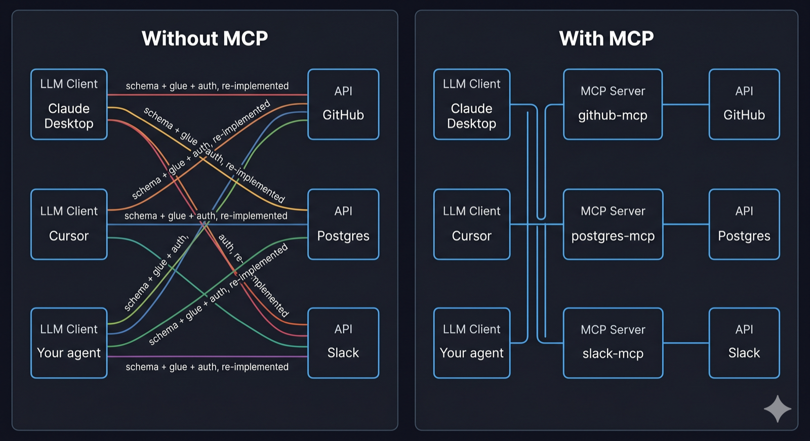

Module 3/7 · 슬라이드 27개 · 원본 슬라이드 ↗
함수/툴 호출, 구조화 출력, 스키마 검증, 파싱, MCP
Module 3 · Day Three
From the demo
The demo showed natural-language questions becoming valid BigQuery SQL — single turn, no agent loop, structured output. Behind that one feature, a set of concrete challenges:
Structure
Make the output a contract
The downstream pipeline expects raw SQL — not markdown, not prose. The model has to produce exactly the shape we ask for.
Context
Assemble the prompt at runtime
The LLM AI call provides all of the necessary context: the available database schema and user request
Prompting
Encode the rules
A dozen hard-won rules sit in the system prompt — each one prevents a specific past failure. Production prompts grow.
Defense
Error Handling
The model occasionally ignores the "no code fences" rule anyway. Post-processing strips wrappers as a belt-and-braces guarantee. Also check for dangerous SQL statements like DROP, ALTER, INSERT, etc.
Architecture
Pick single-turn vs. multi-turn
This example only supports single turn, but wouldn't it be nice if users could ask for refinement...
Cost
Maximize Caching
Long static rule lists in the system prompt get repeated on every call. Anthropic's prompt cache makes repeat calls ~90% cheaper. Structure the prompt to have the most stable parts up front.
This module
Lecture
Four levels of "shape" you can get out of an LLM
Level 1
Parseable output
Parseable output (language, citations, formatting, etc). Almost all real use-cases have some post-processing that depends on LLM compliance with parsing requirements.
Example
Code generation
"Write a Python function that…" → the model returns just the code, with rules in the system prompt and a defensive check on the way out. Another example "Embed citations in your response using [[n]] format" where context in includes source 1: ... source 2:...
Level 2
True structured output
Forced tool use with a JSON schema. Validate the result. Feed errors back so the model self-corrects.
Example
Content extraction
Free-text "Hi I'm Sam at Acme, my email is sam@acme" → a validated {name, email, company} object the next system can rely on.
Level 3
Tool use
Model drives a loop, calling tools to gather info or take action. The agent loop at the heart of every agentic system.
Example
Database Q&A
"Which customers churned last quarter, and why?" → model calls list_tables, get_schema, then run_query — and answers in plain English with the numbers to back it up.
Level 4
MCP — Model Context Protocol
Tool provider publishes the tool-call schema and adapts to the API, instead of the solution developer doing that work.
Example
The GitHub MCP server
GitHub publishes one MCP server — and Claude Desktop, Cursor, and your own agent can all search issues, read PRs, and open branches through it. GitHub wrote the integration once; no client ever re-wires it.
In all cases, the errors in the output can be fed back to the model for correction
Level 1 · Parseable output
Example server endpoint to generate SQL given a database schema and a user question
backend/app.py
SYSTEM = """You are a BigQuery SQL writer.
Return ONLY the SQL — nothing else.
- No markdown, no ```sql code fences
- No commentary, no explanation
- Lowercase keywords (select, from, where)
- Always include a LIMIT clause
- Quote reserved identifiers with backticks"""
@app.route("/api/sql", methods=["POST"])
def generate_sql():
schema_dump = request.json["schema_dump"]
question = request.json["question"]
resp = client.messages.create(
model="claude-sonnet-4-6",
max_tokens=800,
system=SYSTEM + f"\n\nSCHEMA:\n{schema_dump}",
messages=[{"role": "user", "content": question}],
)
raw = resp.content[0].text.strip()
# Defensive strip — model occasionally ignores the no-fence rule
if raw.startswith("```"):
raw = raw.split("\n", 1)[1].rsplit("```", 1)[0].strip()
return {"sql": raw}Level 1 · Parseable output
Frontend caller — plain JS
const schema_dump = `
TABLE \`acme.sales.orders\` (
order_id STRING,
customer_id STRING,
order_date DATE,
total_usd NUMERIC,
status STRING -- pending | shipped | delivered | cancelled
)`
const question = "How much did we sell in the last 7 days, by status?"
const res = await fetch('/api/sql', {
method: 'POST',
headers: { 'Content-Type': 'application/json' },
body: JSON.stringify({ schema_dump, question }),
})
const { sql } = await res.json()
console.log(sql)Expected output
select status, sum(total_usd) as total_sales
from `acme.sales.orders`
where order_date >= date_sub(current_date(), interval 7 day)
group by status
limit 100One LLM call. One string out. The "structure" is whatever you trust the prompt + strip to produce. Cheap, fast, easy to reason about — but no machine-checkable guarantees. A typo in a column name, a missing LIMIT, or a stray ``` fence — your downstream code has to handle it.
Level 1 · Parseable output
Even most free-form response use-cases have some post-processing requirements. The "format" is a sentence in the prompt; the enforcement is your parser.
Bare code, nothing else
"Return ONLY the SQL — no prose, no ``` fences."
Pipe straight into an executor or editor buffer. SQL, regex, shell one-liners — the generator you just saw.
One word from a fixed set
"Reply with exactly one of: positive · negative · neutral"
Switch on the string. Classification, routing, moderation flags, triage.
Templated Markdown
"Use exactly these headings: ## Summary · ## Risks · ## Next steps"
Render directly into a doc or UI. Reports, release notes, PR descriptions.
Delimited lines
"One finding per line: severity | file | description"
Split into records. Bulk extraction, CSV import, lint-style review output.
Inline citations
"After every claim, cite the source as [path:line]."
Regex the references out and link them. Grounded Q&A over docs or a codebase.
Tagged final answer
"Think it through, then put the final answer inside <answer>…</answer>."
Regex out the tag, discard the reasoning. The model thinks freely without it leaking into your UI.
Don't forget to check for compliance and pass descriptive errors back into the model to try again (max retries before failure)
LEVEL 2 · STRUCTURED OUTPUT
You define a schema, force the model to populate it, and parse the resulting instance. Feed JSON validation errors back to the model
Backend — schema + endpoint
EXTRACT_PERSON = {
"name": "record_person",
"description": "Record the person mentioned in the input.",
"input_schema": {
"type": "object",
"properties": {
"name": {"type": "string"},
"email": {"type": "string", "format": "email"},
"company": {"type": "string"},
},
"required": ["name", "email"],
},
}
@app.route("/api/extract-person", methods=["POST"])
def extract_person():
text = request.json["text"]
resp = client.messages.create(
model="claude-sonnet-4-6",
max_tokens=512,
system="Extract the person's name, email, "
"and company (if mentioned).",
messages=[{"role": "user", "content": text}],
tools=[EXTRACT_PERSON],
tool_choice={"type": "tool",
"name": "record_person"}, # FORCE
)
block = next(b for b in resp.content if b.type == "tool_use")
return {"person": block.input}Frontend caller — plain JS
const text = "Hi, I'm Sam at Acme — sam@acme.com."
const res = await fetch('/api/extract-person', {
method: 'POST',
headers: { 'Content-Type': 'application/json' },
body: JSON.stringify({ text }),
})
const { person } = await res.json()
console.log(person)Result — a populated instance
{
"name": "Sam",
"email": "sam@acme.com",
"company": "Acme"
}tool_choice : "auto" lets the model decide; forcing it guarantees the tool call. Schema is the contract; instance is one execution of that contract.
Level 2 · Lecture
JSON-schema only catches gross shape issues. Semantic validation (real email, non-empty, business rules) belongs in Pydantic. When validation fails, the endpoint sends the error back to the model as tool_result message appeneded to the prior messages (all context preserved) and retries; after MAX_ATTEMPTS, it gives up with an HTTP error.
from pydantic import BaseModel, EmailStr, \
ValidationError, Field
MAX_ATTEMPTS = 3
class Person(BaseModel):
name: str = Field(min_length=1)
email: EmailStr
company: str | None = None
@app.route("/api/extract-person", methods=["POST"])
def extract_person():
text = request.json["text"]
messages = [{"role": "user", "content": text}]
for attempt in range(MAX_ATTEMPTS):
resp = client.messages.create(
model="claude-sonnet-4-6",
max_tokens=512,
system="Extract the person's name, "
"email, and company.",
messages=messages,
tools=[EXTRACT_PERSON],
tool_choice={"type": "tool",
"name": "record_person"},
)
block = next(b for b in resp.content
if b.type == "tool_use")
try:
person = Person(**block.input)
return {"person": person.model_dump()} # 200
except ValidationError as e:
# Show the model exactly what went wrong
messages.append({"role": "assistant",
"content": resp.content})
messages.append({"role": "user", "content": [{
"type": "tool_result",
"tool_use_id": block.id,
"is_error": True,
"content": (
f"Validation failed:\n{e}\n\n"
"Re-call record_person with "
"corrected fields."
),
}]})
# All attempts exhausted — structured 422
return jsonify({
"error": "extraction_failed",
"message": (
f"Could not extract a valid person "
f"after {MAX_ATTEMPTS} attempts."
),
"last_validation_error": str(e),
}), 422The endpoint's contract: 200 with a validated person, or 422 with a structured error. Callers never see a malformed person. The retry budget caps cost at MAX_ATTEMPTS LLM calls per request.
LEVEL 2 · TOOL USE
Success — 200 OK
{
"person": {
"name": "Sam",
"email": "sam@acme.com",
"company": "Acme"
}
}Failure — 422 Unprocessable Entity
{
"error": "extraction_failed",
"message": "Could not extract a valid person
after 3 attempts.",
"last_validation_error": "1 validation error
for Person\nemail\n value is not a valid
email address [type=value_error]"
}In practice the second attempt almost always succeeds — the is_error: true tool_result is a clear "here's what went wrong, try again" signal the model treats as a correction, not a generic failure.
Level 3 · Lecture
When the model needs to act — look up data, call an API, search files — you give it tools and let it drive.
def agent(messages, tools):
while True:
resp = client.messages.create(
model="claude-sonnet-4-6",
max_tokens=2048,
system="...",
messages=messages,
tools=tools,
)
messages.append({"role": "assistant", "content": resp.content})
if resp.stop_reason == "end_turn":
return resp
# Run every tool the model asked for, feed the results back
results = []
for block in resp.content:
if block.type == "tool_use":
out = run_tool(block.name, block.input)
results.append({
"type": "tool_result",
"tool_use_id": block.id,
"content": out,
})
messages.append({"role": "user", "content": results})Each iteration: model proposes tool calls → you run them → results go back as a tool_result message → loop. Terminate when stop_reason == "end_turn". This same ~20-line loop is the engine inside Claude Code, Cursor, every agent framework. Model decides when it is done (can meet the users request or hits a dead end)
Level 3 · Real example
Give the model three read-only tools over a project directory and ask it questions. This is a smaller cousin of what Claude Code itself does.
TOOLS = [
{
"name": "list_files",
"description": "List files in the project "
"matching a glob (e.g. '**/*.py').",
"input_schema": {
"type": "object",
"properties": {"pattern": {"type": "string"}},
"required": ["pattern"],
},
},
{
"name": "grep",
"description": "Search file contents for a regex. "
"Returns matching lines with file:line prefixes.",
"input_schema": {
"type": "object",
"properties": {
"pattern": {"type": "string"},
"path": {"type": "string",
"description": "Dir to search."},
},
"required": ["pattern"],
},
}, {
"name": "read_file",
"description": "Read a file's contents. "
"Optionally a line range.",
"input_schema": {
"type": "object",
"properties": {
"path": {"type": "string"},
"start": {"type": "integer"},
"end": {"type": "integer"},
},
"required": ["path"],
},
},
]
SYSTEM = """You are a codebase Q&A assistant.
Use the tools to find evidence before answering.
Always cite file paths and line numbers. If you
don't find the answer in the code, say so plainly."""Three small tools cover most read-only questions about a codebase. The model decides the sequence: grep for a symbol, list files in a dir, read what looks promising. You never hardcode the order.
Level 3 · Real example
User asks: "Where does the chat endpoint forward requests to, and what model does it call?"
turn 1 → model: tool_use grep(pattern="/api/chat", path=".")
← tool: backend/app.py:18: @app.route("/api/chat", methods=["POST"])
frontend/src/App.jsx:14: const res = await fetch('/api/chat', {
turn 2 → model: tool_use read_file(path="backend/app.py", start=1, end=40)
← tool: from anthropic import Anthropic
...
@app.route("/api/chat", methods=["POST"])
def chat():
user_message = request.json["message"]
resp = client.messages.create(
model="claude-sonnet-4-6",
...
)
return jsonify({"reply": resp.content[0].text})
turn 3 → model: end_turn
ASSISTANT FINAL ANSWER
─────────────────────────────────────────────────────────────────
The chat endpoint is defined in `backend/app.py:18`. It forwards the
user's message to Anthropic's API via `client.messages.create(...)` on
line 22, using model `claude-sonnet-4-6`. The reply is returned as
JSON under the `reply` key.Three turns, two tool calls, one citation-grounded answer. The model chose to grep first to locate the route, then read_file for context. Swap the tools for get_order / refund / send_email and you have a support agent. The shape is the same.
Lecture
```sql ... ``` even when told not toend_turn instead of a refusal flagmax_tokens truncation cuts the JSON mid-stringstop_reason — was it max_tokens? a refusal?max_tokens generously; check usage afterwardTrust but verify. Every production prompt has guardrails on both sides — what you send and what comes back.
Level 4 · Lecture
To let your LLM call an external API today (without MCP), you write all of this yourself:
# 1. Hand-write the schema
GITHUB_LIST_ISSUES = {
"name": "github_list_issues",
"description": "List issues for a repo.",
"input_schema": {
"type": "object",
"properties": {
"owner": {"type": "string"},
"repo": {"type": "string"},
"state": {"type": "string", "enum": ["open", "closed", "all"]},
},
"required": ["owner", "repo"],
},
}
# 2. Hand-write the glue — auth, request, response shaping
def github_list_issues(owner, repo, state="open"):
r = requests.get(
f"https://api.github.com/repos/{owner}/{repo}/issues",
headers={"Authorization": f"Bearer {os.environ['GH_TOKEN']}"},
params={"state": state},
)
r.raise_for_status()
return [{"number": i["number"], "title": i["title"]} for i in r.json()]· Per API: schema + glue + auth + response shaping — written by you
· Per client (Claude Desktop, Cursor, your agent): re-wired again
· API adds or updates an endpoint → you update tool schemas by hand
· Switch LLM providers → redo the wiring against the new tool-calling shape
This works. It doesn't scale. N apps × M APIs = N × M hand-rolled implementations.
Level 4 · Lecture
Every client that wants to use every tool reimplements the integration. Nothing is reusable across clients or across LLM vendors.

The provider publishes the schema. The service author ships the tool-call schema with their MCP server — you no longer hand-write or maintain it.
The provider does the translation. Their server turns each JSON-schema-compliant tool call into the actual API request and shapes the response back.
The hand-rolled approach grows as a product (N × M). MCP collapses it into a sum (N + M) — because the work moves to the side that owns the API.
Level 4 · Lecture
An open standard for the wire between LLM clients (Claude Desktop, your IDE, an agent framework) and servers that expose capabilities. Introduced by Anthropic in late 2024; by 2026 supported by Claude, GPT (Responses API), Gemini, Cursor, VS Code Copilot, Zed.
What changes
Three primitives a server can expose
Think of it as HTTP for LLM tools. The protocol doesn't tell you which servers exist — but once you point a client at one, everything else is standardized.
Level 4 · Lecture
# pip install mcp
from mcp.server.fastmcp import FastMCP
mcp = FastMCP("demo-server")
@mcp.tool()
def add(a: int, b: int) -> int:
"""Add two numbers together."""
return a + b
@mcp.tool()
def greet(name: str) -> str:
"""Return a friendly greeting."""
return f"Hello, {name}!"
@mcp.resource("config://app")
def get_config() -> str:
"""Expose some static config as a readable resource."""
return "app_name=demo\nversion=0.1"
if __name__ == "__main__":
mcp.run() # defaults to stdio transportThe @mcp.tool() decorator generates the schema from type hints and the description from the docstring. @mcp.resource(uri) exposes read-only data. Compare to the hand-rolled GitHub example — that was one tool. This is two tools plus a resource, with no schema written by hand.
Level 4 · Lecture
import asyncio
from mcp import ClientSession, StdioServerParameters
from mcp.client.stdio import stdio_client
async def main():
# Tell the client how to launch the server process
params = StdioServerParameters(command="python", args=["server.py"])
async with stdio_client(params) as (read, write):
async with ClientSession(read, write) as session:
await session.initialize()
# DISCOVERY — the schemas come from the server, not from your code
tools = await session.list_tools()
print("Tools:", [t.name for t in tools.tools])
# → Tools: ['add', 'greet']
resources = await session.list_resources()
print("Resources:", [r.uri for r in resources.resources])
# → Resources: ['config://app']
# INVOCATION
result = await session.call_tool("add", {"a": 2, "b": 3})
print("add(2,3) =", result.content[0].text) # → 5
cfg = await session.read_resource("config://app")
print(cfg.contents[0].text) # → app_name=demo
asyncio.run(main())The client never hardcodes the tool list. If the server author adds a new tool tomorrow, this same client picks it up on the next list_tools() call. That is the win — the integration is no longer something you maintain.
Level 4 · Lecture
The client above just listed and called tools — no model involved. Real usage pipes the discovered schemas into the LLM's tool-use API and routes the model's calls back through the session.
async with ClientSession(read, write) as session:
await session.initialize()
discovered = await session.list_tools()
# Translate MCP tool schemas → Anthropic tool-use format
anthropic_tools = [
{"name": t.name, "description": t.description, "input_schema": t.inputSchema}
for t in discovered.tools
]
resp = client.messages.create(
model="claude-sonnet-4-6",
max_tokens=1024,
tools=anthropic_tools, # ← discovered, not hardcoded
messages=[{"role": "user", "content": "What's 17 + 25?"}],
)
for block in resp.content:
if block.type == "tool_use":
out = await session.call_tool(block.name, block.input) # ← MCP handles it
# …feed the result back into the next messages.create callMCP handles discovery and invocation. The LLM layer handles reasoning about when to call what. Same agent loop you saw earlier — the tool registry is just sourced over MCP instead of hand-coded.
Level 4 · Lecture
There's no special MCP discovery layer. You point the client at a URL or a local command, the same way you'd point an HTTP client at any API.
| Transport | Where the server runs | How the client reaches it |
|---|---|---|
| stdio | Local subprocess | Client launches it (python server.py, npx some-mcp-server) and talks over stdin/stdout. No network, no DNS. |
| Streamable HTTP (formerly HTTP + SSE) |
A normal web server | Plain URL like https://mcp.example.com/sse. DNS resolves it. TLS works the usual way. Auth is typically OAuth 2. |
Wire a server into Claude Desktop (or Claude Code) with one config entry:
{
"mcpServers": {
"demo": { "command": "python", "args": ["/path/to/server.py"] }
}
}External directories (Anthropic's catalog, Smithery, community lists) tell you which servers exist — but that's a layer on top of the protocol, not in it. Like REST: HTTP doesn't tell you which APIs exist; you find them through docs.
Level 4 · Lecture
Reach for MCP when
Hand-roll when
For a single integration, MCP is overkill — your hand-rolled tool is simpler. The payoff is in the second, third, and fourth integration that you don't have to write.
[Image Prompt]
A simple two-axis chart. X-axis: "Number of integrations / clients you support" (1 → many). Y-axis: "Lines of integration code you maintain." Two lines: a steeply rising orange line labeled "Hand-rolled (N × M)" and a gently rising blue line labeled "MCP (N + M)". The two lines cross around the 2–3 integration mark; past that, the gap widens dramatically.
Project
You'll receive a starter app and a folder of unstructured documents (job postings, emails, recipes, meeting notes). Build a single-turn extractor that produces a validated structured object from each one.
↓ Starter project extract-starter.zip
What's in the zip
extract.py — runnable starter with stubs for schema, prompt, validationdocuments/ — sample unstructured textsrequirements.txtREADME.mdYour job
input_schema.tool_choice to force structured output.Alternative welcome. Propose your own structured-extraction use case if it's more interesting to you. Present: your schema, your system prompt, one case that works, one that broke, and what you did about it.
출처: https://ksetp.netlify.app/tools · ksept-lab 학습 아카이브